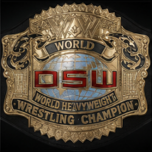

Return Home 
Title History
DSW World Heavyweight Title

DSW PPV #41 - 10/28/07 - The Trav (filling in for Rey (c)) def.
The Midnight Creeper
DSW PPV #40 - 09/22/07 - Rey (c) def. (DSW World TV Champ), Superstar J Rocker
DSW PPV #39 - 09/02/07 - Rey (c) def. (DSW Intercontinental Champ), The Joker
DSW PPV #36 - 07/14/07 - Rey (c) def. (DSW U.S. Champ), The Bounty Hunter (by Tapout) (Special Ref: Gothic Mayhem)
DSW PPV #35 - 06/30/07 - (IWC World Champ) Rey def. Mr. Perfect (c)
DSW PPV #34 - 05/26/07 - Mr. Perfect (c) def. The Midnight Creeper
DSW PPV #30 - 05/27/06 - Mr. Perfect (c) def. Steve Striker & (DSW US Champ),
The Midnight Creeper
DSW PPV #28 - 04/01/06 - Mr. Perfect def. Steve Striker (c)
DSW PPV #26 - 09/24/05 - Steve Striker (c) def. (DSW Tag Champ) Grimskull
DSW PPV #25 - 09/10/05 - Steve Striker def. Scream (c)
DSW PPV #19 - 07/02/05 - Scream (c) def. Stealth
DSW PPV #18 - 05/28/05 - Scream (Won 8-way Gauntlet Match)
10/04/04 - (Title Vacated)
DSW PPV #17 - 09/04/04 - Savior (c) def. Lucas (by DQ)
DSW PPV #16 - 06/26/04 - Savior (c) def. Jack The Pumpkin King
DSW PPV #14 - 05/29/04 - Kamikaze VS Savior (c) (w/ The Terrorist) (No Contest; Savior retains the title)
DSW PPV #13 - 05/15/04 - Savior def. The Traveler (c)
DSW PPV #12 - 05/01/04 - The Traveler (c) def. The Midnight Creeper
DSW PPV #11 - 04/24/04 - The Traveler (c) def. Scream
DSW PPV #10 - 04/10/04 - The Traveler def. Scream (c)
DSW PPV #08 - 11/02/03 - Scream (c) def. Mr. Perfect (Ladder Match)
DSW PPV #07 - 10/25/03 - Scream (c), (w/ The Sorceress) def. The Midnight Creeper (Lights Out Match)
DSW PPV #06 - 10/11/03 - Scream (c), (w/ The Sorceress) def. Savior
DSW PPV #04 - 09/20/03 - Scream def. Mr. Perfect (c) (L.A. Street Fight Match)
08/09/03 - Mr. Perfect (Tournament Winner In Japan)
Return to Top
DSW Intercontinental Title

DSW PPV #41 - 10/28/07 - Gothic Mayhem def. The Joker (c)
DSW PPV #38 - 08/02/07 - The Joker - Tournament Winner
Return to Top
DSW United States Heavyweight Title

DSW PPV #41 - 10/28/07 - Scream (c) def Steve Striker
DSW PPV #39 - 09/02/07 - Scream def. Steve Striker (c)
DSW PPV #?? - 08/15/07 - Steve Striker def. The Bounty Hunter (c)
DSW PPV #32 - 08/06/06 - The Bounty Hunter (c) def. The Fake Scream Version 2
DSW PPV #31 - 07/01/06 - The Bounty Hunter def. The Midnight Creeper (c)
DSW PPV #29 - 04/15/06 - The Midnight Creeper (c) def. Jason Fear
DSW PPV #27 - 10/15/05 - The Midnight Creeper (c) def. Mr. Perfect
DSW PPV #25 - 09/10/05 - The Midnight Creeper def. Mr. Perfect (c) (Special ref - Cody Cruise)
DSW PPV #21 - 07/23/05 - Mr. Perfect (c) def. Grimskull
DSW PPV #19 - 07/02/05 - Mr. Perfect (c) (w/ Miss Attitude) def. Kid Vengeance
DSW PPV #18 - 05/28/05 - Mr. Perfect (c) def. Kid Vengeance
DSW PPV #17 - 09/04/04 - Mr. Perfect (c) def. The Razor
DSW PPV #16 - 06/26/04 - Mr. Perfect (w/ Alana) def. Grimskull (c)
DSW PPV #13 - 05/15/04 - Grimskull def. Mr. Perfect (c) (w/ Alana)
DSW PPV #12 - 05/01/04 - Mr. Perfect (c) def. Jack The Pumpkin King
DSW PPV #10 - 04/10/04 - Mr. Perfect (c) def. The Midnight Creeper
DSW PPV #09 - 03/13/04 - Mr. Perfect def. The Trav (c) (Russian Chain Match)
DSW PPV #08 - 11/02/03 - The Trav (c) def. Savior
DSW PPV #07 - 10/25/03 - The Trav (c) def. Jason Blood
DSW PPV #06 - 10/11/03 - The Trav def. Kamikaze and Blade (c) (Triple
Threat Match)
DSW PPV #04 - 09/20/03 - Mr. Perfect / The Trav (No Contest) - Blade
retains Title
DSW PPV #03 - 09/06/03 - Blade def. The Trav (c) (w/ Luxie)
DSW PPV #01 - 08/23/03 - The Trav (c) def. Dragon Kid
BSW PPV #01 - 08/16/03 - The Trav def. Scream (Tournament Final)
Return to Top
DSW World Television Title

DSW PPV #39 - 09/02/07 - "Superstar" J. Rocker (c) def. Grimskull
DSW PPV #35 - 06/30/07 - "Superstar" J. Rocker (c) def. Grimskull
DSW PPV #33 - 03/24/07 - "Superstar" J. Rocker def. Azrael (c)
DSW PPV #30 - 05/27/06 - Azrael def. Mike (c) (aka The Freedom Fighter)
DSW PPV #27 - 10/15/05 - The Freedom Fighter (c) def. The Freebird & The Masked Phantom (Triple Threat Backlot Brawl)
DSW PPV #26 - 09/24/05 - The Freedom Fighter (c) def. (Tag Champ) The Freebird & (IWC Champ) Rey (Triple Threat Match)
DSW PPV #25 - 09/10/05 - The Freedom Fighter (c) def. Stealth
DSW PPV #23 - 08/13/05 - The Freedom Fighter (Tournament Winner)
Return to Top
DSW World Tag Team Titles
"aka the DSW Elite Tag Team Titles"

DSW PPV #39 - 09/02/07 - Mr. Perfect & The Freedom Fighter def. Gothic Mayhem &
The Midnight Creeper (c)
DSW PPV #36 - 07/14/07 - Gothic Mayhem & The Midnight Creeper (c) def.
Steve Striker & (DSW TV Champ), Superstar J Rocker (Tag Team Ladder Match)
DSW PPV #35 - 06/30/07 - The Midnight Creeper & Gothic Mayhem def.
Scream & Jack The Pumpkin King (c)
DSW PPV #32 - 08/06/06 - Scream & Jack The Pumpkin King def. Dr. Vamp & ?
DSW PPV #31 - 07/01/06 - David Adams & Rey (c) def. (DSW World Champ) Mr. Perfect & (DSW TV Champ) Azrael
DSW PPV #30 - 05/27/06 - Rey def. Jason Fear & "Superstar" J. Rocker (Handicap Match)
DSW PPV #29 - 04/15/06 - Rey & David Adams def. Mad Dog & Grimskull (c)
DSW PPV #25 - 09/10/05 - "The Dream Masters" Grimskull & The Freebird (c) def. The Masked Phantom &
The Masked Avenger
DSW PPV #24 - 08/26/05 - Grimskull & The Freebird def. Azrael & Stealth
DSW PPV #19 - 07/02/05 - The Midnight Creeper & The Shadow Warrior (c) def. The Fake Scream Version
2 (Handicap Match)
DSW PPV #18 - 05/28/05 - (Shadow Warrior & The Midnight Creeper are awarded titles due to Ricky's Injury)
10/04/04 - (Title Vacated)
DSW PPV #17 - 09/04/04 - Ricky Rocket & The Midnight Creeper def. Lucas (Handicap Match)
DSW PPV #16 - 06/26/04 - Lucas & The Midnight Creeper (c) def.
Chris Phoenix & Ricky Rocket
DSW PPV #14 - 05/29/04 - Lucas & The Midnight Creeper def.
Onyx & The Traveler (c) (filling in for Blade)
DSW PPV #13 - 05/15/04 - Blade & Onyx (c) def. Bill Akers &
Lucas (by DQ)
DSW PPV #12 - 05/01/04 - Blade & Onyx def. Billy Bob &
Joe Fortune (c)
DSW PPV #10 - 04/10/04 - Billy Bob & Joe Fortune awarded the DSW World Tag Team Titles by
Savior
Return to Top
DSW Hardcore Title

DSW PPV #16 - 06/26/04 - Onyx (c) def. Savior and Lucas
DSW PPV #15 - 06/12/04 - Onyx def. Jack The Pumpkin King (c)
DSW PPV #14 - 05/29/04 - Jack The Pumpkin King wins a Hardcore 4-way dance.
Return to Top
DSW World Cruiserweight Title

DSW PPV #06 - 10/11/03 - *Onyx def. The Dragon Kid (c)
DSW PPV #02 - 08/30/03 - The Dragon Kid (c) def. Scarecrow
DSW PPV #01 - 08/23/03 - The Dragon Kid def. Scarecrow (Tournament Final)
Return to Top
*Not the current Onyx (The previous Onyx is no longer present in the DSW)

icemantraveler.github.io/dsw/